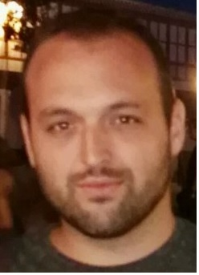

Me considero una persona muy trabajadora y con ganas siempre de emprender nuevos retos que me ayuden a crecer.
| Empresa/Organización | Cargo | Localización | Desde-hasta |
| Apitecnic | Técnico GIS | Madrid | Octubre 2015 - Enero 2016 |
| Título | Entidad | Promoción |
| Geografía y Ordenación del Territorio | Universidad Complutense | 2016 |
| Curso Socorrismo | Cruz Roja Española | 2013 |
Puedes encontrarme en los siguientes enlaces: